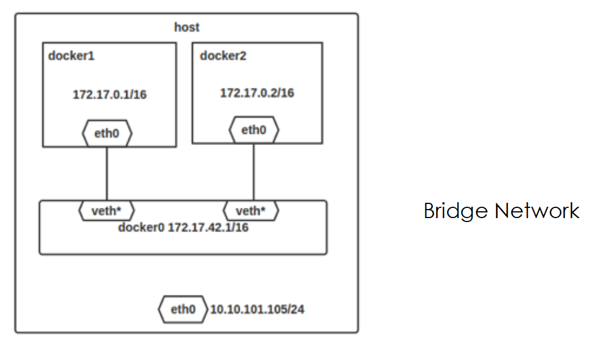
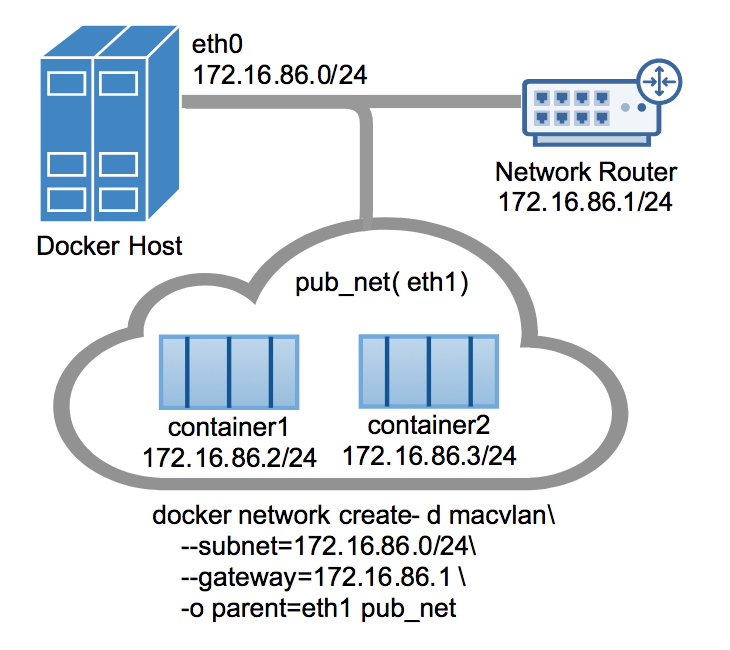

05 容器网络机制和多主机网络实践
概述
容器网络不是新技术，它是云计算虚拟化技术互联互通的基础核心技术。一般意义的网络都是主机与主机之间的通信，颗粒度局限在物理层面的网卡接口。随着虚拟化技术的发展，以应用为中心的新网络结构逐渐明朗清晰。容器技术就是让依赖环境可以跟着应用绑定打包，并随需启动并互联。容器技术的特点也对网络技术的发展起到了互推的作用，当网络不在持久化存在的时候，软件定义网络（SDN）技术的能力就会体现的更充分。
容器主机网络模型
Docker 内建的网络模型是 Bridge Network。这种网络是基于主机内部模型的网络，设计之初也是为了解决单机模式下容器之间的互联互通问题。如图：

Veth pair 技术源于 Linux 网络模型的虚拟设备，比如 TAP 设备，方便主机上应用程序接收网络数据而创建。TAP 设备只能监听到网卡接口上的数据流量，如果想连接多个网络命名空间，就需要用到 Veth pair 技术来打通连接。容器网络之间的互通就是通过这个做到的，但是细心的读者可以看到，图上主机网卡和 docker0 网桥是没有连接的，不能数据互联。为了让容器与外界网络相连，首先要保证主机能允许转发 IP 数据包，另外需要让 iptables 能指定特定的 IP 链路。通过系统参数 ip_forward 来调节开关，如：
$ sysctl net.ipv4.conf.all.forwarding
net.ipv4.conf.all.forwarding = 0
$ sysctl net.ipv4.conf.all.forwarding=1
$ sysctl net.ipv4.conf.all.forwarding
net.ipv4.conf.all.forwarding = 1
另外，当 Docker 后台程序起来后，会自动添加转发规则到 Docker 过滤链上，如下图：
$ sudo iptables -t filter -L
Chain INPUT (policy ACCEPT)
target prot opt source destination
ACCEPT tcp -- anywhere anywhere tcp dpt:domain
ACCEPT udp -- anywhere anywhere udp dpt:domain
ACCEPT tcp -- anywhere anywhere tcp dpt:bootps
ACCEPT udp -- anywhere anywhere udp dpt:bootps
Chain FORWARD (policy ACCEPT)
target prot opt source destination
DOCKER-ISOLATION all -- anywhere anywhere
DOCKER all -- anywhere anywhere
ACCEPT all -- anywhere anywhere ctstate RELATED,ESTABLISHED
ACCEPT all -- anywhere anywhere
ACCEPT all -- anywhere anywhere
DOCKER all -- anywhere anywhere
ACCEPT all -- anywhere anywhere ctstate RELATED,ESTABLISHED
ACCEPT all -- anywhere anywhere
ACCEPT all -- anywhere anywhere
DOCKER all -- anywhere anywhere
ACCEPT all -- anywhere anywhere ctstate RELATED,ESTABLISHED
ACCEPT all -- anywhere anywhere
ACCEPT all -- anywhere anywhere
ACCEPT all -- anywhere anywhere
DROP all -- anywhere anywhere
Chain OUTPUT (policy ACCEPT)
target prot opt source destination
Chain DOCKER (3 references)
target prot opt source destination
Chain DOCKER-ISOLATION (1 references)
target prot opt source destination
DROP all -- anywhere anywhere
DROP all -- anywhere anywhere
DROP all -- anywhere anywhere
DROP all -- anywhere anywhere
DROP all -- anywhere anywhere
DROP all -- anywhere anywhere
RETURN all -- anywhere anywhere
另外衍生出来的问题是，所有 Docker 容器启动时都需要显示指定端口参数，这样做是因为由于需要 iptable 规则来开启端口映射能力。
跨越主机的容器网络模型
如果需要让容器网络可以跨越主机访问，最原生的方式是 Macvlan 驱动支持的二层网络模型。VLAN 技术是网络组网的基本技术，在网络环境中很容易获得，所以，由此产生的用户映像是能不能打破主机和容器的网络间隙，把他们放在一个网络控制面上协作。Macvlan 技术就是为了这个需求而设计的，它实现了容器网络和主机网络的原生互联。当然，需要支持 Macvlan 也是需要准备一些基础环境的：
- Docker 版本必须在1.12.0+以上
- Linux kernel v3.9–3.19 and 4.0+才内置支持Macvlan 驱动
Macvlan 技术是一种真实的网络虚拟化技术，比其他Linux Bridge 更加轻量级。相比 Linux Bridge，性能更高。因为它跳过了主机网卡和容器网络直接的转发过程，容器网卡接口直接对接主机网口，可以视作为主机网络的延伸。这样的网络，让外部访问容器变的非常简便，不在需要端口映射，如下图所示：

为了让容器网络支持多个分组，可以考虑采用802.1q 的 VALN tagging 技术实现。这种技术的好处对于小规模主机网络下容器网络的搭建非常合适。这块通过如下图可以解释清楚：
容器网络标准 CNI
容器网络接口（CNI）是云原生基金会支持项目，属于云计算领域容器行业标准。它包含了定义容器网络插件规范和示范。因为 CNI 仅仅聚焦在容器之间的互联和容器销毁后的网络配置清理，所以它的标准简洁并容易实现。
标准包含两部分，CNI Plugin 旨在配置网络信息，另外定义了 IPAM Plugin 旨在分配 IP，管理 IP。这个接口有更广泛的适用性，适应多种容器标准。如图：
网络插件是独立的可执行文件，被上层的容器管理平台调用。网络插件只有两件事情要做：把容器加入到网络以及把容器从网络中删除。
调用插件的数据通过两种方式传递：环境变量和标准输入。
一般插件需要三种类型的数据：容器相关的信息，比如 ns 的文件、容器 id 等；网络配置的信息，包括网段、网关、DNS 以及插件额外的信息等；还有就是 CNI 本身的信息，比如 CNI 插件的位置、添加网络还是删除网络等。
把容器加入到网络
调用插件的时候，这些参数会通过环境变量进行传递：
CNI_COMMAND：要执行的操作，可以是ADD（把容器加入到某个网络）、DEL（把容器从某个网络中删除）、VERSIONCNI_CONTAINERID：容器的 ID，比如 ipam 会把容器 ID 和分配的 IP 地址保存下来。可选的参数，但是推荐传递过去。需要保证在管理平台上是唯一的，如果容器被删除后可以循环使用CNI_NETNS：容器的 network namespace 文件，访问这个文件可以在容器的网络 namespace 中操作CNI_IFNAME：要配置的 interface 名字，比如eth0CNI_ARGS：额外的参数，是由分号;分割的键值对，比如 “FOO=BAR;ABC=123”CNI_PATH：CNI 二进制文件查找的路径列表，多个路径用分隔符:分隔
网络信息主要通过标准输入，作为 JSON 字符串传递给插件，必须的参数包括：
cniVersion：CNI 标准的版本号。因为 CNI 在演化过程中，不同的版本有不同的要求name：网络的名字，在集群中应该保持唯一type：网络插件的类型，也就是 CNI 可执行文件的名称args：额外的信息，类型为字典ipMasq：是否在主机上为该网络配置 IP masqueradeipam：IP 分配相关的信息，类型为字典dns：DNS 相关的信息，类型为字典
CNI 作为一个网络协议标准，它有很强的扩展性和灵活性。如果用户对某个插件有额外的需求，可以通过输入中的 args 和环境变量 CNI_ARGS 传输，然后在插件中实现自定义的功能，这大大增加了它的扩展性；CNI 插件把 main 和 ipam 分开，用户可以自由组合它们，而且一个 CNI 插件也可以直接调用另外一个 CNI 插件，使用起来非常灵活。如果要实现一个继承性的 CNI 插件也不复杂，可以编写自己的 CNI 插件，根据传入的配置调用 main 中已经有的插件，就能让用户自由选择容器的网络。
容器网络实践
容器网络的复杂之处在于应用的环境是千变万化的，一招鲜的容器网络模型并不能适用于应用规模的扩张。因为所谓实践，无外乎是在众多网络方案中选择合适自己的网络方案。
一切应用为王，网络性能指标是指导我们选择方案的最佳指南针。主机网络和容器网络互联互通的问题，是首先需要考虑的。当前比较合适的容器网络以 Macvlan/SR-IOV 为主。考虑原因还是尽量在兼容原有网络硬件的集成之上能更方便的集成网络。这块的方案需要软硬件上的支持，如果条件有限制，可能很难实现。比如你的容器网络本来就构建在 Openstack 的虚拟网络中。
退而求其次，当前最普遍的方案就是 Vxlan/overlay 的方案，这种网络方案是虚拟网络，和外界通信需要使用边界网关通信。这块主要的支持者是 Kubernetes 集群。比如常用的 Flannel 方案，主要被用户质疑的地方就是网络效率的损耗。 当然，Vxlan 方案的优秀选择 openswitch，可能是最强有力的支持者。通过 OVS 方便，可以得到一个业界最好的网络通信方案。当遇到生产级瓶颈时，可以考虑使用硬件控制器来代替 OVS 的控制器组件来加速网络。目前 Origin 的方案中选择的就是 OVS 方案，可以认为是当前比较好的选择。
当然，开源的 overlay 方案中有比较优秀的方案比如 Calico 方案，它借用了 BGP 协议作为主机与主机之间边界的路由通信，可以很好的解决小集群模式下的高效网络传输。Calico 的背后公司也是借用此技术在社区中推出商业硬件解决方案。从国内的中小型企业的网络规模来说，此种网络完全可以满足网络需要。
展望网络发展趋势
容器网络互联已经不在是棘手的问题，可行的实现就在手边。目前用户进一步的使用中，对网络的限流和安全策略有了更多的需求。这也催生了如 cilium 这样的开源项目，旨在利用 Linux 原生的伯克利包过滤（Berkeley Packet Filter，BPF）技术实现网络流量的安全审计和流量导向。如图：
所以，容器网络的发展正在接近应用生命周期的循环中，从限流，到安全策略，再到可能的虚拟网络 NFV 的构建都有可能改变我们的容器世界。
参考：